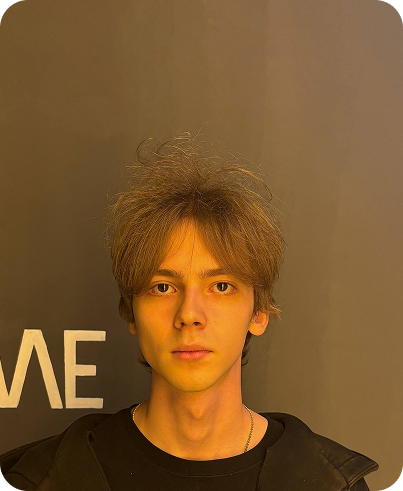

Ключевые навыки:
Языки и технологии: HTML5, CSS3, JavaScript
Инструменты разработки: Git, Chrome DevTools
Стилизация: CSS3 (Flexbox, Grid, Адаптивный дизайн), SASS/SCSS
Прочее: Figma (нарезка макетов), БЭМ, Кроссбраузерная и адаптивная верстка
Я занимаюсь Front-end разработкой 4 года, имею опыт работы с:
Версткой landing pages и многостраничных сайтов по методологии БЭМ.
Интеграцией JavaScript-логики для интерактивных элементов (слайдеры, формы, модальные окна).
Реализацией анимаций интерфейса с помощью CSS3
@trusaddd
ОБО МНЕ
Здравствуйте, меня зовут Денис. Учусь Front-end 4 года из которых 1.5 года изучаю JavaScript и React.JS.

ДЕНИС КРАСОВСКИЙ
Front-end Разработчик
My Stack